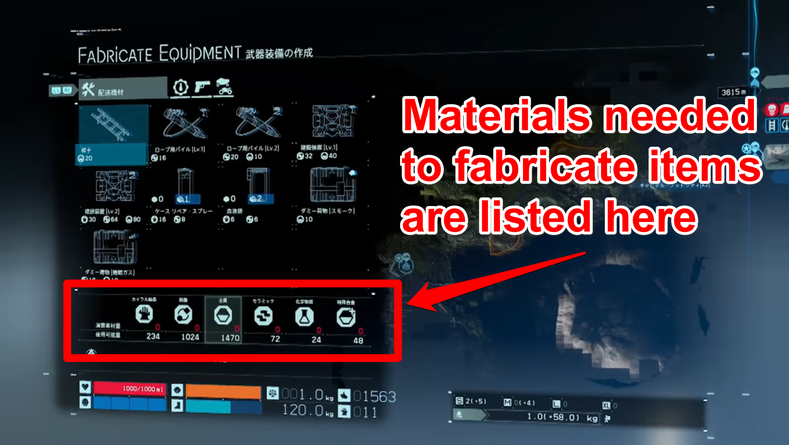

☰ Menu
Obviate Premium
Death Stranding Game Guides
Death Stranding Materials Guide

Materials consist of Chiral Crystals, Metals, Resins, Ceramics, Chemicals, and Special Alloys.
Metals are needed in large quantities to build and upgrade most PCC Structures, including Bridges, and also for restoring roads using Auto Pavers.
Resins are needed to create a variety of smaller equipment items, including Bridges Boots.
Ceramics are needed in large quantities to restore roads using Auto Pavers.
Chemicals are needed to create special items, and used to upgrade Zip Line structures.
Special Alloys are needed to create and upgrade Safe Houses and more advanced items.
Chiral Crystals are needed for almost everything, including making Hematic Grenades and Blood Bags, building, upgrading, and repairing structures, and restoring roads with Auto Pavers.